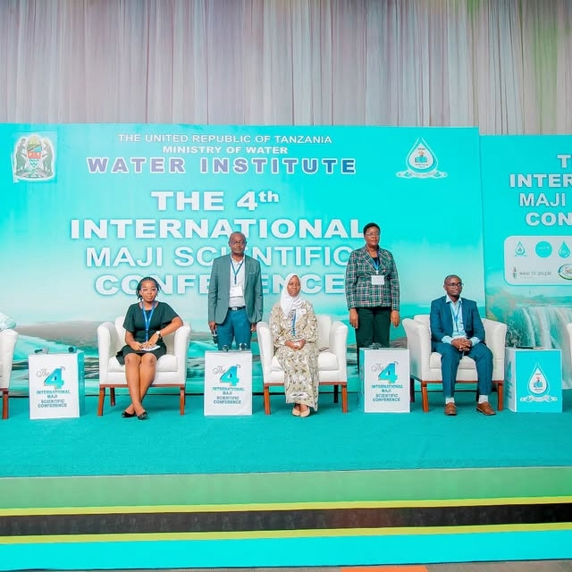
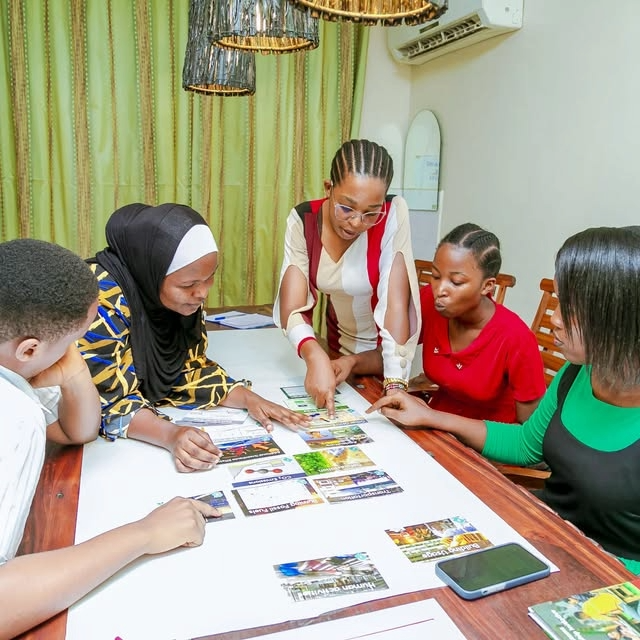

Hydrogeology
Water-focused technical knowledge and interest in sustainable resource management.
HYDROGEOLOGIST • WATER & CLIMATE PROFESSIONAL
I am Bertha Magomere, passionate about water resource management, climate resilience, innovation and community empowerment.
01 — ABOUT
Bertha Magomere is a Hydrogeologist & Accountant with an interest in sustainable water solutions, climate change awareness and environmental resilience.
Her work combines technical interests in water with leadership, creativity, public speaking and community-focused innovation. She is committed to inspiring and uplifting the next generation through innovation, creativity and self-reliance.
Water-focused technical knowledge and interest in sustainable resource management.
Strategic planning, decision-making and supervision through initiative-led work.
Public speaking, presentations, program hosting and community engagement.
Using creativity and youth-led initiatives to support the water sector.
02 — RESEARCH & PUBLICATIONS
Research papers, journal articles, conference papers and reports can be added here as Bertha's publication record grows.
Add verified titles, abstracts, authors, publication years and PDF/DOI
links to data/publications.js.
03 — EXPERIENCE
Leads a youth-led organization fostering innovation and creativity in the water sector, with responsibilities including decision-making, strategic planning and supervision of daily activities.
Connects university and college students to part-time jobs and internship opportunities while delivering weekly presentations on the importance of gaining practical experience before graduation.
04 — INITIATIVES
A visual showcase for the initiatives, collaboration and public-facing work that complement Bertha's academic and professional profile.


05 — RECOGNITION
2025Recognition that forms an important part of Bertha's developing scientific and professional profile.
View research space → Maji Scientific Conference
Maji Scientific Conference
06 — EDUCATION & EXPERTISE
Water Institute
Water-focused technical discipline
Tumaini University
Leadership • Creativity • Public Speaking • Critical Thinking • Innovation
07 — CONTACT
For professional opportunities, research collaboration, speaking engagements or water and climate initiatives, get in touch.